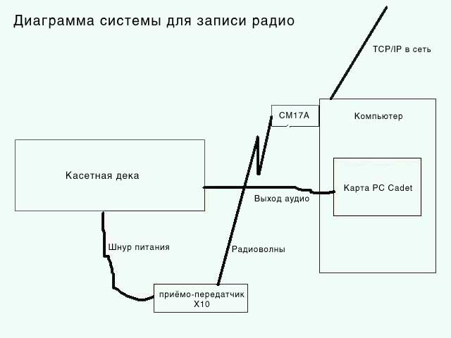

|
Много классной музыки и полезной информации проходит через радио эфир,
но у вас редко бывает возможность все это послушать. Я решил эту проблему
с помощью различных систем записи радиопередач на аудио кассеты. В начале
из всего оборудования у меня были только магнитофон и аппаратный
таймер-переключатель, работающий от электросети, позже замененные модным
стерео тюнером и немного лучшим таймером. Некоторые стерео тюнеры при
выключении имеют возможность запоминать радио станцию, на которую они были
настроены, это позволяет подключить к ним кассетную деку и включать их
просто втыкая вилку в розетку. Такой подход имеет несколько недостатков.
Таймеры работают только в 24-х часовом цикле, поэтому если вы хотите
записать вечернее восьмичасовое шоу в субботу и еще одно в воскресный
полдень, вы должны перенастраивать их каждый раз на конкретный день. У
более дорогих таймеров имеются интерфейсы, которые очень сложно изучить и
использовать, тем самым, ограничивающие их полезность. Также трудно
поддерживать точность этих таймеров, ведь они обычно изготавливаются без
расчета на это. Все, что вы сможете с ними делать, - только включать и
выключать радио. Вы также должны быть уверены, что радио правильно
настроено на выбранный канал. С каждой вашей попыткой поймать нужную радио
программу увеличивается вероятность вашей ошибки, и вы можете пропустить
передачу.
Очевидным выходом из такой ситуации является использование компьютера
для контроля радио и кассетной деки, устанавливая с его помощью время и
радио каналы. Текстовый интерфейс идеален для таких целей, поскольку его
достаточно чтобы установить все параметры и писать заметки по вашей работе
так, чтобы было понятно, что нужно изменить, когда радиостанции меняют
свое эфирное расписание или вы измените свои вкусы.
Linux устанавливается с уже сконфигурированным таймером - утилитой
cron(8). Может быть, cron недостаточно точен для некоторых операций в
реальном времени, но в нашем случае его точность вполне достаточна,
особенно если система не несет большой нагрузки.
Я начинал с системы на базе процессора 486 DX 66Mhz с 1,5 гигабайтным
жестким диском и 16-тью мегабайтами оперативной памяти, которую я выменял
на 6 упаковок домашнего пива. В принципе мне хватило бы и полгигабайта
свободного пространства на диске. Ко всему этому я добавил радиокарту PC Cadet,
модуль
управления CM17A 'Firecracker' X10, кассетную деку, радиопередатчик и
радиоприемник в одном корпусе X10 и несколько аудио кабелей. Кассетная
дека должна иметь возможность начинать запись сразу при включении питания.
Аудио кабель должен иметь миниатюрный стерео штекер на одном конце, и пару
штекеров формата RCA на другом конце. Многие торгующие музыкальной
техникой магазины продают их для подключения портативных CD-плееров к
домашним стерео системам.
Настраиваем железо
Вставьте радио карту PC Cadet в свободный слот ISA. Подключите модуль
CM17A "Firecracker" в один из последовательных портов на задней панели
вашего компьютера. Для CM17A нужен 9-ти штырьковый разъем (DB9), поэтому
если у вас есть только 25-штырьковые последовательные порты (DB25), вам
нужно купить переходник 9 на 25. CM17A имеет сквозной 9-ти штырьковый порт
на задней панели устройства. Это полезно, если нужно подключить другое
устройство к 9-ти штырьковому порту вашей системы.
Лучше всего заставить ваш компьютер работать без монитора и клавиатуры,
через сеть. Чтобы добиться этого, вам необходимо установить сетевую карту.
Поскольку единственное, что действительно будет "путешествовать" по сети -
это текст, вам будет достаточно 10-ти мегабитной карточки 10BaseT. Если вы
последуете этому совету, попытайтесь найти компьютер с BIOS, которая
допускает отключение проверки наличия клавиатуры при загрузке. В любом
случае, для нормальной загрузки вашему компьютеру будет нужна видео карта,
вот тут-то и пригодится ваша куча старого компьютерного хлама, вам будет
достаточно даже старого монохромного адаптера 'Hercules'.
Устанавливаем необходимый софт
Сначала я установил дистрибутив Linux Debian 'Potato'. Инсталяция была
простой, на компакт-дисках были все необходимые драйверы устройств.
Установка Linux выходит за рамки этой статьи, если вам нужна помощь,
начните с The
Linux Installation HOWTO. Не нужно устанавливать X-Window system и
любые сопутствующие файлы для ее поддержки. Это сильно упрощает
инсталляцию. Лучше избегать конфигураций с выбором загрузки одной из
нескольких ОС или загрузки системы с дискеты, если это возможно на вашей
машине. Я решил установить языки C и Perl, хотя они и не являются
необходимыми. Языки пригодятся, если позже я решу поэкспериментировать с
конфигурированием системы через браузер.
Если ваша машина защищена Firewall, рекомендую сделать программу
/sbin/shutdown доступной для выполнения обычным пользователям. На
многопользовательской системе вы не должны этого делать из соображений
безопасности. Но, если вы единственный пользователь компьютера, изменение
прав на /sbin/shutdown делает возможным выключение компьютера с любого
аккаунта, под которым вы сейчас работаете в системе. Это упрощает ряд
задач, для которых вы используете свой компьютер в качестве обычного
пользователя. Вот как это сделать с помощью команды chmod(1). Зайдите в
систему как root и наберите chmod +s /sbin/shutdown
Позже я объясню, как использовать эту программу совместно с
cron'ом(8).
Linux 2.2 управляет радиокартой 'Cadet', так же как и другими типами
карт расширения, с помощью драйверов
Video4Linux. Для установки карты необходимо проделать 3 шага. Сначала
вы должны воспользоваться утилитой pnpdump(8) чтобы создать файл isapnp и
отредактировать этот файл в соответствии с вашими установками. Подробные
инструкции по конфигурированию устройств isapnp можно получить из Plug-and-Play-HOWTO.
Я разобрался с этим шагом без особых трудностей, прочитав man(1) страницы
о isapnp(8) и pnpdump(8). Карта PC Cadet выдаст строчку ID "ADS Cadet
AM/FM Radio Data Receiver V. 1.4". Программа pnpdump(8) покажет, какой
базовый адрес IO использует карта. Скорее всего, это будет 0x200. После
того как вы успешно модифицировали выходной файл от pnpdump(8), "скормите"
его isapnp(8). Вы можете загрузить в память драйвер "videodev" с помощью
команды insmod(8). Потом загрузите модуль "radio-cadet" с аргументом
"io=номер", где номер - базовый адрес ввода-вывода полученный с помощью
pnpdump(8). Наконец, вы должны сконфигурировать устройство 81,64 с помощью
mknod(1). К этому моменту у вас уже должна быть возможность слушать радио
с помощью утилиты fm. Карта радиоприема
PC Cadet имеет только один линейный выход, к нему с помощью аудио кабеля
нужно подключить магнитофон и проверить, все ли работает правильно.
Подключив радио карту к магнитофону, включите его режим воспроизведения
всего того, что поступает на его аудио вход (на магнитофонах, не имеющих
этого режима, нужно включить запись и нажать паузу, а качестве источника
записи выбрать аудио вход, к которому вы подключили радио карту). Вы
можете слушать радио, управляя картой с помощью командной строки. Теперь,
кода вы выполнили все эти шаги, нужно убедится, что они повторяются при
каждой загрузке, для этого копируем исправленный выходной файл программы
pnpdump(8) в /etc/isapnp.conf, соответствующие модули и аргументы в
/etc/modules.conf.
Убедитесь, что вы правильно загрузили драйверы для последовательных
портов (об этом нужно было позаботиться еще во время установки системы).
После этого вы можете установить программу "br" (доступна на хранилище пакетов Debian'a, хотя
вам придется поохотиться за ней в "stable/electronics/bottlerocket").
Используйте ее для того, чтобы определить к какому последовательному порту
вы подключили CM17A. Самый простой способ протестировать ее -- подключить
обычную лампу к модулю приемо-передатчика X10, попробуйте повключать ее из
командной строки с помощью прграммы "br". После того , как вы выяснили,
какой последовательный порт вы используете (скорее всего вам придется
повозиться только с двумя портами), создайте мягкую ссылку на правильное
устройство используя ln(8), назовите ее "/dev/firecracker".
Остальное программное обеспечение лучше устанавливать под одним ID
пользователя. У меня есть пользователь "Radio", которому принадлежит
скрипт, файлы crontab(8) и файлы других приложений, которые мне нужны
чтобы слушать радио. Это необходимый шаг, если вы ставите все на машину,
которую вы используете и для других целей. В противном случае вам придется
ломать голову, когда нужно будет архивировать данные или апгрейдить ваш
компьютер.
Вы адресуете устройства через X10 с помощью 'house code' и
последовательного номера устройства. Я использую X10 чтобы управлять
освещением в доме, поэтому для управления кассетной декой через X10 я
использовал house code, отличный от того который управляет
включением-выключением света. Такой подход упрощает администрирование на
тот случай, если вы решите управлять другими устройствами X10 с помощью
компьютера. Контроллер X10, используемый для управления лампами, не
является достаточно ненадежным для подключения радио- или других
электронных устройств. Для таких устройств лучше использовать специальный
прибор, содержащий реле, а не твердотельный переключатель.
Собираем все воедино
Теперь, когда вы убедились, что CM17A и радио карта работают, настало
время собрать всю систему воедино. Компьютер включите в обычную розетку.
Кассетную деку подключите к приемнику X10, шнур оттуда в обычную розетку.
Соедините аудио кабелем компьютер и кассетную деку. Подключите сетевую
карту к сети, если вы будете работать через сеть.
Когда вы закончите, вся аппаратура должна быть соединена как на
рисунке.

Настраиваем софт
После того, как вы заставили все компоненты работать вместе, надо
придумать какой-то способ заставить радио автоматически переключать каналы
в определенное время. Тут легко сойти с ума: веб интерфейс, perl-скрипт
для управления и еще один CGI-скрипт для того, чтобы редактировать файл
crontab и куча других мелких побрякушек. Чтобы все работало, я использовал
bash(1). Простой небольшой скрипт, который я упоминал, находится ниже:
Скрипт
в виде текстового файла здесь #!/bin/bash
#################################################################################
# Скрипт для управления радио. Очень сырая версия.
#
# Charles Shapiro Dec 2000
################################################################################
LOGFILE=/home/radio/radio.log
BREXEC=/usr/bin/br
FMEXEC=/usr/local/bin/fm
echo ------------------ >> ${LOGFILE}
date >> ${LOGFILE}
${BREXEC} -c b -n 1 >> ${LOGFILE} 2>&1
${FMEXEC} $1 65536 >> ${LOGFILE} 2>&1
echo Sleeping $2m.. >> ${LOGFILE}
sleep $2m >> ${LOGFILE} 2>&1
${FMEXEC} off >> ${LOGFILE} 2>&1
${BREXEC} -c b -f 1 >> ${LOGFILE} 2>&1
date >> ${LOGFILE}
echo ------------------ >> ${LOGFILE}
Будем вести лог-файл, который поможет выявить все ошибки, которые могут
появиться при добавлении новых заданий cron'а, лог будет полезен и при
отладке. Например, мне пришлось прописать полные пути ко всем файлам,
которые я использовал в этом скрипте, иначе ОС не могла их найти при
запуске из-под cron'а(8).
Редактируем ваш файл crontab
Используйте crontab(1) чтобы установить cron-файл, который вы будете
использовать для настройки радио. Мой выглядит так: #
# Crontab file for radio
#
# Charles Shapiro Dec 2000
#
# Prairie Home Companion
00 19 * * Sat /home/radio/radiofirst.sh 90.1 70
# Industrial Noise
00 00 * * Sun /home/radio/radiofirst.sh 91.1 70
# My Word
00 12 * * Sun /home/radio/radiofirst.sh 90.1 70
# Locals Only
00 19 * * Sun /home/radio/radiofirst.sh 90.1 70
#Shutdown after weekend
21 00 * * Sun /sbin/shutdown -h -y now
# Commonwealth of California
00 10 * * Wed /home/radio/radiofirst.sh 88.5 70
# Between the Lines
30 19 * * Thur /home/radio/radiofirst.sh 90.1 40
#Shutdown after mid-week
21 00 * * Thur /sbin/shutdown -h -y now
Ваш crontab будет отличаться от моего, так как именно здесь вы
указываете, какие радио программы следует записывать. Обратите внимание на
строчки с командой 'shutdown' - они позволяют завершить работу с Linux
прямо с моего 'radio' аккаунта. Так я смогу просто выключать компьютер по
сети, если не буду использовать его в течении нескольких дней. Без этого,
мне пришлось бы загружаться с другой машины, заходить по сети на эту
машину и оттуда вручную выключать систему. Дав разрешение выполнять
программу /sbin/shutdown непривилегированным пользователям, я могу хранить
все в файле crontab аккаунта 'radio', так мне легче во всем разобраться.
Советы на будущее
Настоящий хакер смог бы сделать все это на бездисковом компьютере,
запуская все программы с пары дискет с LRP (the Linux Router Project) или
другого крошечного дистрибутива Linux. Я уже использовал такой подход в этом проекте, поэтому
я могу убрать жесткий диск и SCSI-конроллер с машины, на которой я
записываю радио, и использовать их на другой машине.
Но пусть, все таки, у нас есть жесткий диск, в этом случае можно
улучшить пользовательский интерфейс. Я могу запустить на машине веб-сервер apache и написать CGI-скрипт,
объединив его с формой в браузере, это позволит легко менять радиостанции,
что слушать и когда. И еще совет: вместо записи радио на аудио кассеты
можно делать MP3-файлы, но это зависит от звуковой карты в компьютере и
MP3 плейера в моем автомобиле, ничего из этого пока не видится на
горизонте (на моем радио компьютере кончились свободные слоты). Я также
думал о подсоединении нескольких кассетных дек к одному выходному аудио
кабелю Cadet'а, подключив их к разным контроллерам X10. Это позволит
записывать дольше без смены кассет, поэтому я мог бы записывать более
одного шоу, не находясь физически где-нибудь рядом с компьютером.
Спецификация video4linux позволяет подключать более одной радиокарты к
одной машине, поэтому вы можете так модифицировать систему, что можно
будет записывать более одного шоу за раз. Можно присоединить контроллер CM11A X10 к
оставшемуся ком-порту и сети. Эти устройства имеют независимо
программируемые таймеры, поэтому компьютер может указать CM11A включить
его через пару дней, а потом сам себя выключить. Другое, менее элегантное
решение, - использовать один из моих старых аппаратных таймеров, которые
валяются где-то по дому.
Это как раз та ниша, где Linux может показать свою гибкость и мощь.
Дешевые серверы, которые выполняют только одну задачу хороши как
расширение оригинальной философии ПО для Unix и Linux, когда простые части
склеиваются вместе, образуя сложную систему. Эта задача была бы
практически невыполнима на дорогих ОС с графическим интерфейсом
пользователя, таких как OS/2, Windows или BeOS. Проделать это в MS-DOS
потребовало бы разработки большого количества программ, даже в том случае,
если вы смогли бы найти или написали сами драйверы для радиокарты и CM17A.
|